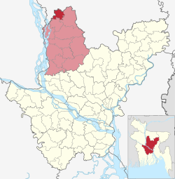

অবস্থান ও আয়তন
ধনবাড়ী উপজেলার ভৌগোলিক অবস্থান ২৪.৬৮০৫৭৮৪° উত্তর ৮৯.৯৩৯১৮৪১° পূর্ব অর্থাৎ ২৩°৩৭´ থেকে ২৪°৪৫´ উত্তর অক্ষাংশ এবং ৯০°১০´ থেকে ৯০°০০´ পূর্ব দ্রাঘিমাংশ। এটি মধুপুর উপজেলা ও জামালপুর জেলার সংযোগ সড়কের দুপাশে অবস্থিত। এর মোট আয়তন ১৩০.৫০ বর্গকিলোমিটার। ভৌগোলিকভাবে ধনবাড়ীর মাটি মধুপুর কর্দম দিয়ে গঠিত। ধনবাড়ী উপজেলার কেন্দ্র থেকে উত্তরে জামালপুর জেলার জামালপুর সদর উপজেলা, দক্ষিণে গোপালপুর উপজেলা ও মধুপুর উপজেলা, পূর্বে মধুপুর উপজেলা, পশ্চিমে জামালপুর জেলার সরিষাবাড়ী উপজেলা। মধুপুর উপজেলার মধুপুর গড়ের শেষ পশ্চিম অংশ থেকে ধনবাড়ী উপজেলার সীমানা শুরু হয়ে টাঙ্গাইল জেলার উত্তর প্রান্তে শেষ হয়েছে। এ উপজেলার উপর দিয়ে ঝিনাই নদী প্রবাহিত হয়েছে। টাঙ্গাইল জেলা সদর থেকে সড়কপথে ধনবাড়ীর দূরত্ব ৬৩ কিলোমিটার।
উল্লেখযোগ্য স্থান
কালিহাতী উপজেলায় মোট ১৩টি ইউনিয়ন রয়েছে। এগুলো হল- যথাঃ ১। গোহালিয়াবাড়ী ২। দশকিয়া ৩। বীরবাসিন্দা ৪। দুর্গাপুর ৫। নাগবাড়ী ৬। নারান্দিয়া ৭। পাইকড়া ৮। পারখি ৯। বল্লা ১০। বাংড়া ১১। সল্লা ১২। সহদেবপুর
উল্লেখযোগ্য ব্যক্তিত্ব:
- ধনবাড়ি জমিদার বাড়ি ও ধনবাড়ী মসজিদ - চার গম্বুজবিশিষ্ট মোগল স্থাপত্যরীতিতে তৈরি এই জমিদার বাড়িটি নবাব বাড়ি বা নবাব মঞ্জিল নামেও পরিচিত। নবাব বাড়ির পাশে রয়েছে ৩০ বিঘার দিঘি ও ধনবাড়ী মসজিদ। ১৯২৯ সালে সৈয়দ নওয়াব আলী চৌধুরীর মৃত্যুর পর থেকে এখানে ২৪ ঘণ্টা ‘কোরআন তিলাওয়াত’ বা পাঠ করা হয় যা কখনো বন্ধ করা হয় না।
ধনবাড়ি উপজেলা
মানচিত্রে ধনবাড়ি উপজেলা